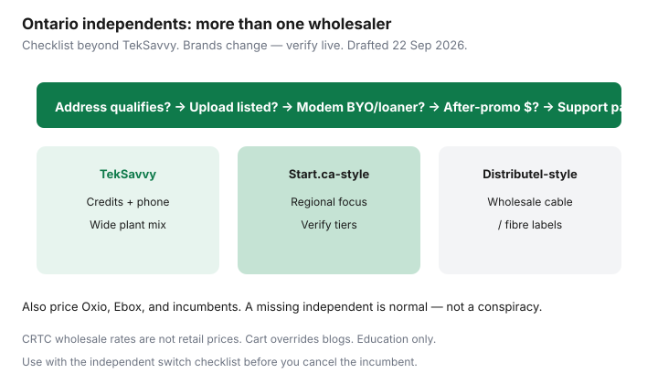

Internet · Canada
Start.ca, Distributel, and Other Ontario Independents: How to Compare Beyond TekSavvy
TekSavvy earned its Ontario reputation for a reason: phone support, wholesale cable and fibre footprints, and bill-credit promos that show up in every comparison table. It is not the only independent that can qualify at a Toronto, Ottawa, London, or Kitchener address. Households that stop at one brand miss Start.ca-style regional players, Distributel-branded wholesale offers, Oxio’s flat rates on Cogeco plant, and other retailers that rotate through the same CRTC wholesale framework.
Brand line-ups change through acquisitions and renames. This is a comparison method — verify which logos still sell at your postal code the week you shop. Education only.
Disclosure: Saving Optimizer has no partnerships with TekSavvy, Start.ca, Distributel, Oxio, or other ISPs. Offer types only; we do not invent live affiliate deals. Always confirm the legal entity on the contract.
Key takeaways
- Ontario has a bench of independents on wholesale cable and fibre — TekSavvy is the famous name, not the only qualifier.
- Compare upload, modem policy, after-promo monthly, and support channel before you fall for a download headline.
- Treat Start.ca- and Distributel-style brands as live checklist rows: confirm they still retail internet at your address on draft day (~22 Sep 2026 context).
- Reputation signals (CCTS complaints patterns, forum volume, phone hours) are inputs, not verdicts. Your first bill is the real test.
- When no independent qualifies, use the gap as leverage on Bell, Rogers, or a flanker — then follow the switch checklist when one does.
Why Ontario has more than TekSavvy on wholesale cable/fibre
CRTC wholesale rules let independent retailers buy access to incumbent last miles and resell service. That is why two homes on the same street can see TekSavvy, Oxio, Ebox, and a regional independent with different prices for “100 Mbps.” The plant is shared; the retail contract is not. Stopping at TekSavvy is like test-driving one used car on a lot of ten.
Compare upload, modem policy, and after-promo rates
- Upload — Cable tiers with asymmetric uplinks punish video calls and cloud backups. Fibre labels still need the number in writing.
- Modem — Loaner versus approved bring-your-own versus mandatory rental changes 24-month CAD. See buy vs rent.
- After-promo — A $39 credit month that becomes $75 is a different product from Oxio-style flat pricing. Always multiply through month 24.

Distributel/Start.ca-style checklists (verify live brands at draft)
As of this draft’s research window (~22 Sep 2026), Ontario shoppers still encounter Start.ca and Distributel-family retail brands in independent round-ups and address checkers — alongside TekSavvy, Oxio, and others. Acquisitions reshuffle logos. Before you commit:
- Confirm the brand’s own availability tool accepts your unit.
- Note the legal name on the order form (billing entity matters for CCTS).
- Capture speed down/up, monthly during promo, monthly after, equipment, install, and cancellation rules.
- Read recent service updates for your city — not national marketing.
If a brand has exited consumer internet or redirected to another logo, drop the row. Do not order from a stale blog list.
Support and billing reputation signals to weigh
Phone hours, chat transcripts, and how invoice credits appear are household constraints. TekSavvy’s phone culture is a known preference for some middle-aged households; digital-only brands trade price for that. Skim recent forum themes for billing errors or modem approval delays, then weight them lightly against your own risk tolerance. One viral thread is not a regulator finding.
When an independent is not available at your address
Bulk building contracts, unfinished fibre laterals, and wholesale gaps are normal. Document the “no service” result, then price Rogers, Bell, and flankers. Use the refusal as a calm fact on a winback call: “No independent qualifies; here is Telus/Bell/Rogers alternative math.” Rural edges may need the rural guide instead.
Shopping worksheet for Ontario independents
| Brand | Down/Up | Mo 1–12 | Mo 13–24 | Modem | Support | 24-mo CAD |
|---|---|---|---|---|---|---|
| TekSavvy | ||||||
| Oxio | ||||||
| Start.ca (if live) | ||||||
| Distributel-family (if live) | ||||||
| Other independent | ||||||
| Incumbent / flanker BATNA |
Sources & date stamps
- CRTC wholesale / internet regulatory background — wholesale rates are not retail prices (see also Order context discussed on fibre vs cable guide).
- TekSavvy, Oxio, Start.ca, Distributel, and other Ontario retail sites — address tools and plan cards (verify live ~22 Sep 2026).
- Saving Optimizer — TekSavvy worth it; TekSavvy vs Oxio; switch checklist; cheap Toronto internet.
Frequently asked questions
Is TekSavvy always the cheapest independent in Ontario?
No. Year-one credits can look best while a flat-rate or regional independent wins over 24 months — or the reverse. Run the worksheet.
Do Start.ca and Distributel still sell residential internet?
Confirm on their sites the week you shop. Independent brands rebrand and merge. This guide teaches the method, not a permanent directory.
Can two independents use the same cable plant?
Yes. Wholesale access means multiple retailers can share an incumbent last mile with different prices and rules.
What if only TekSavvy qualifies besides Rogers or Bell?
Then your shortlist is short. Still price Oxio and flankers, then use the best independent number on a winback call.
Should I switch before my modem arrives?
No. Follow the switch checklist: qualify, order, schedule overlap, then cancel the old service under Internet Code timing.